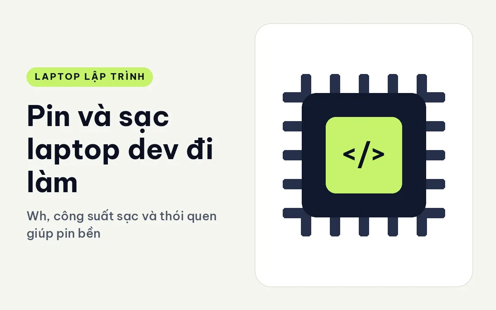
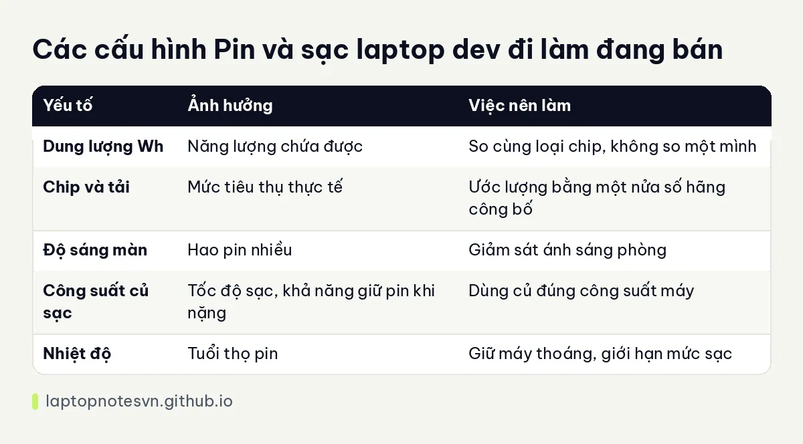

Pin và sạc laptop dev đi làm - Wh, công suất sạc và thói quen giúp pin bền

Thời lượng pin trên trang sản phẩm thường lạc quan, vì hãng đo ở điều kiện nhẹ nhàng như duyệt web, độ sáng vừa phải. Dev dùng máy theo cách khác: IDE, trình duyệt nhiều thẻ, Docker, họp trực tuyến. Pin tụt nhanh hơn con số quảng cáo, đôi khi chỉ còn một nửa. Hiểu cách đọc thông số pin giúp bạn dự tính đúng việc mình mang sạc hay không.
Bài này giải thích dung lượng Wh, những thứ làm pin hao, cách sạc, mẹo giữ pin bền và các máy đang bán có điểm đáng chú ý về pin. Tôi không đưa số giờ đo thực tế, chỉ dùng số hãng công bố.
Đọc dung lượng pin và thời lượng
Dung lượng pin tính bằng Wh, đại diện cho năng lượng chứa được. Số Wh cao hơn cho pin lâu hơn khi cùng mức tiêu thụ điện. Nhưng chỉ nhìn Wh thì chưa đủ, vì máy tiêu thụ điện nhiều thì pin lớn cũng cạn nhanh. Một máy 60Wh dùng chip tiết kiệm điện có thể lâu hơn máy 70Wh dùng chip mạnh.
Thời lượng hãng công bố ghi theo kịch bản duyệt web hoặc xem video. Khi bạn build, chạy máy ảo hay họp video, mức tiêu thụ cao hơn gấp đôi hoặc hơn, và thời lượng giảm tương ứng. Cách thực tế là lấy con số hãng công bố, nhân với khoảng một nửa để ước lượng cho công việc nặng.
Độ sáng màn hình là thủ phạm lớn thứ hai. Giảm độ sáng xuống mức vừa đủ có thể kéo dài pin đáng kể. Chế độ nền tối trên tấm OLED cũng tiết kiệm điện, trong khi ở màn LCD nó không thay đổi nhiều.
Sạc: USB-C PD hay adapter riêng
Nhiều laptop mỏng sạc qua USB-C theo chuẩn Power Delivery. Ưu điểm lớn là một củ sạc dùng chung cho máy, điện thoại và phụ kiện, gọn khi đi làm. Công suất củ sạc phải đủ cho máy: củ yếu vẫn sạc được nhưng chậm, hoặc máy không giữ nổi mức pin khi chạy nặng.
Máy hiệu năng cao thường dùng adapter riêng công suất lớn, có khi lên tới 140W hoặc hơn. Những bộ này nặng và cồng kềnh, nhưng cần thiết để cấp đủ điện cho CPU và GPU chạy hết mức. Nếu bạn hay đi, hãy tính thêm trọng lượng củ sạc vào hành trang.
Trước khi mua củ sạc bên thứ ba, hãy đối chiếu công suất và chuẩn với máy của mình. Dùng củ sạc kém chất lượng có thể gây hỏng pin hoặc bo mạch, tiết kiệm ở đây là không đáng.
Giữ pin bền theo thói quen
Pin lithium xuống cấp theo số chu kỳ sạc và theo nhiệt độ. Hãy tránh để máy nóng khi sạc, nhất là khi vừa chạy nặng vừa sạc, vì nhiệt độ cao làm pin chóng chai. Đặt máy ở nơi thoáng, đừng đậy trên chăn hay đệm.
Nhiều hãng có chế độ giới hạn mức sạc, ví dụ dừng ở khoảng 80 phần trăm. Nếu bạn cắm điện hầu hết thời gian ở bàn làm việc, bật chế độ này giúp pin ít bị căng và sống lâu hơn. Khi cần đi cả ngày, tắt giới hạn đi để sạc đầy.
Đừng để pin cạn về không rồi mới sạc, cũng đừng cắm sạc 100 phần trăm liên tục ở nhiệt độ cao. Mức ở giữa là mức dễ chịu nhất cho pin.
Tóm gọn trong một bảng

| Yếu tố | Ảnh hưởng | Việc nên làm |
|---|---|---|
| Dung lượng Wh | Năng lượng chứa được | So cùng loại chip, không so một mình |
| Chip và tải | Mức tiêu thụ thực tế | Ước lượng bằng một nửa số hãng công bố |
| Độ sáng màn | Hao pin nhiều | Giảm sát ánh sáng phòng |
| Công suất củ sạc | Tốc độ sạc, khả năng giữ pin khi nặng | Dùng củ đúng công suất máy |
| Nhiệt độ | Tuổi thọ pin | Giữ máy thoáng, giới hạn mức sạc |
Pin khi dùng với dock và màn ngoài
Nếu phần lớn thời gian bạn cắm điện ở bàn, pin chỉ là dự phòng và dung lượng lớn ít quan trọng hơn thói quen bảo vệ pin. Khi đó, bật chế độ giới hạn mức sạc và để máy mát là cách kéo dài tuổi thọ pin hiệu quả nhất.
Ngược lại, nếu bạn làm việc di động, hãy chọn máy có pin lớn và chip tiết kiệm điện, rồi tập thói quen: giảm độ sáng, tắt Bluetooth khi không dùng, đóng tab thừa, và thoát các ứng dụng chạy nền không cần. Những thay đổi nhỏ này cộng lại có thể giúp thêm hàng giờ.
Cuối cùng, lưu ý đến sạc nhanh qua USB-C. Nó tiện khi bạn gấp, nhưng dùng thường xuyên với nhiệt độ cao thì pin mòn nhanh hơn. Dành sạc nhanh cho lúc cần, còn lại sạc bình thường.
Đối chiếu với máy còn hàng
HP EliteBook 8 G2i 14 Next Gen AI (2026) có pin 62Wh, nặng 1,4 kg, màn WUXGA 300 nits. Pin lớn trong thân máy 14 inch nhẹ, hợp người đi lại nhiều trong ngày và cần chút dư pin khi họp.
Lenovo ThinkPad T1G Gen 8 (2026) đi kèm adapter 140W, hãng ghi pin tới khoảng 11 giờ khi duyệt web, hỗ trợ bốn màn hình. Đây là máy có card rời nên khi chạy nặng pin sẽ giảm nhanh hơn nhiều so với con số đó.
DELL Pro Max 16 MC16250 - Mobile Workstation (2025) có pin 96Whr, hãng ghi 6 đến 9 giờ, nặng 2,2 kg. Pin lớn nhưng máy mạnh, nên bạn nên tính mang theo củ sạc nếu làm việc nặng cả ngày.
Đối với máy có card rời và tản nhiệt lớn, hãy đọc thêm bài tản nhiệt khi build lâu trên laptop.
Muốn so với một máy nhẹ chuyên pin, bài ThinkPad X1 Carbon Gen 14 cho lập trình là ví dụ cụ thể.
Đăng ngày 09/11/2026